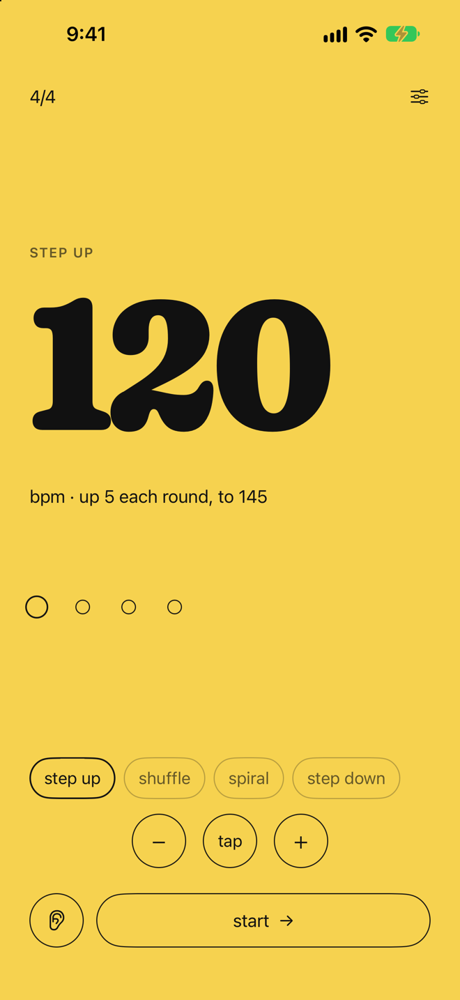
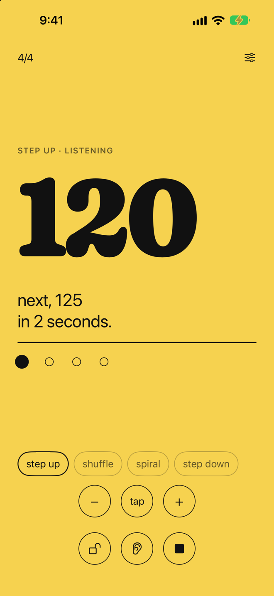
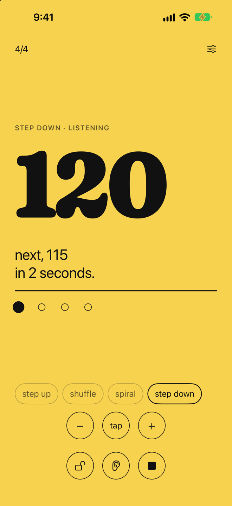
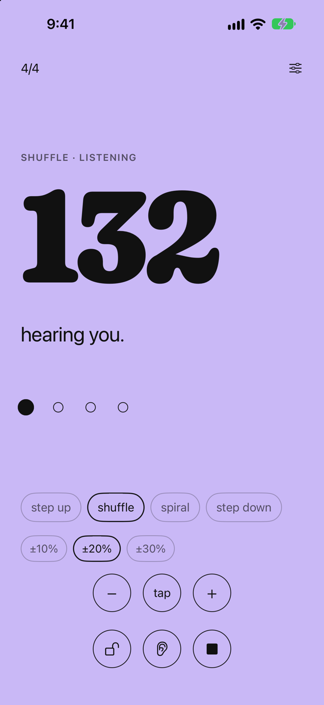
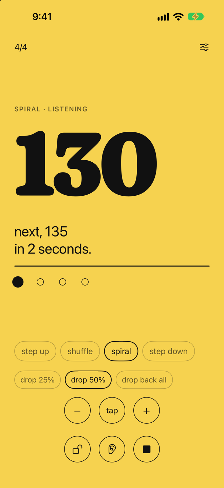

The core loop.
In Auto mode, TempoStep listens through the microphone. When it detects silence for the wait you set, it advances the tempo by one step. You play, you stop, the tempo moves up. Repeat.
Everything else in the app controls how that loop behaves.
The main screen.
The screen is arranged top to bottom:
- Tempo: the current BPM in large type. Tap it to type a value. When you reach your target the screen flashes to another color.
- Beat dots: one per beat. Tap a dot to accent it. Tap the time signature above to pick a metre.
- Tempo buttons: minus, tap and plus. Minus and plus move one BPM.
- Plan line: shows what the session will do, for example "up 5 each round, to 160". While playing it becomes a sentence such as "hearing you."
- Listening toggle: the ear icon is Auto, the hand icon is Manual.
- Range chips: ±10%, ±20% and ±30% in Shuffle; drop 25%, drop 50% and drop back all in Spiral.
- Bottom row: start (stop while playing). While playing in Auto: hold lock, listening toggle, stop. In Manual: back, listening toggle, stop, next. Modes are the chips above.
- Status line: small line of feedback text at the bottom. Controls hide after three seconds of playing. Tap the screen to bring them back. Long-press any control to see a help card.

Beat accents.
Each dot in the beat row is tappable. Tap any dot to toggle an accent on that beat.
- Accented beats are drawn bigger and click louder.
- Normal beats play the standard click.
- Beat 1 is accented by default. In 6/8, 9/8 and 12/8 every third beat is accented too. Changing the metre resets accents to that default.
Metre.
Tap the time signature (for example 4/4) to open the picker: 2/4, 3/4, 4/4, 5/4, 6/8, 7/8, 9/8 and 12/8. While playing, the change lands on the next bar line. For other metres use beats per bar and beat unit in Settings.
Auto and Manual.
Auto
The mic is active. TempoStep detects when you stop playing and counts down before advancing.
The screen says "hearing you." while it picks up your playing. When you stop it says "next, 125 in 2 seconds." and a thin line runs across the screen as the countdown.


Manual
The mic is off. A back button and a next button sit on either side of stop.
- Next advances the tempo one step.
- Back returns to the tempo before the last step. One level only.
Use Manual when you want full control over when the tempo moves, or when mic detection is not practical.
Mic calibration.
Each time you press start with listening on, TempoStep spends 2 seconds measuring the room. Stay quiet. It uses that time to set a noise floor.
The screen reads "stay quiet, measuring the room."
It also runs when the system volume changes.
Four practice modes.
Pick a mode from the chips under the time signature: step up, shuffle, spiral, step down. The chips are visible while stopped.
Step Up
The default. Each advance adds your tempo step, up to a maximum of 240.
When the tempo reaches your target, a chime plays and the screen flashes to another color. It keeps going if you keep playing.
Best for building speed on a single passage from a comfortable starting point to a goal tempo.
Step Down

Each advance subtracts your tempo step, down to the floor you set in Settings.
A chime plays and the screen flashes when the tempo reaches or falls below your floor.
In Manual mode, next lowers the tempo the same way.
Best for slowing down to isolate a difficult passage, or warming down after a fast practice session.
Shuffle

TempoStep draws a random tempo near your target each time you stop. The range chips set the spread.
| Setting | Spread |
|---|---|
| ±10% | Within 10% of target |
| ±20% | Within 20% of target |
| ±30% | Within 30% of target |
The target tempo is shown below the tempo. Adjusting the BPM manually while in Shuffle updates the target. When you stop the session, the BPM returns to your target.
No chime in Shuffle mode.
Best for keeping practice unpredictable, so you adapt instead of anticipating.
Spiral


Spiral climbs, then goes back over ground you have covered.
How a cycle works:
- The tempo advances normally for three steps.
- On the next silence it drops back partway. The screen says "review at 140."
- On the following silence, it resumes from the previous peak and climbs again.
The drop depends on the range chip:
| Setting | Drop |
|---|---|
| Drop 25% | 25% of the distance climbed |
| Drop 50% | 50% of the distance climbed |
| Drop back all | All the way back to the start of the session |
The target is shown below the tempo. A chime plays when the tempo first reaches it.
Best for getting ready for a performance that runs faster or slower than you planned, from nerves or adrenaline.
Hold lock.
The lock sits to the left of stop. It is available in Auto mode only.
When locked, it still listens, but the tempo does not move. The screen says "held at 120."
Use it to stay at one tempo without turning listening off.
Target BPM.
Set in Settings under practice. Step Up and Spiral aim for it; Shuffle draws around it. Step Down uses its own floor.
- Step Up and Spiral: the ceiling. A chime plays when you reach it.
- Shuffle: the center point around which tempos are drawn.
- Step Down: uses its own floor, also in Settings.
The screen flashes when the target is crossed. This resets when you stop or change modes.
The chime.
A short musical chime plays the first time your tempo crosses the target. You also feel three quick haptic taps.
It fires once per session and resets when you stop or change modes. Shuffle mode never triggers a chime.
What the screen says.
| Sentence | What it means |
|---|---|
stay quiet, measuring the room. | Calibrating |
listening. | Waiting for you to play |
hearing you. | The mic hears your instrument |
next, 125 in 2 seconds. | Countdown before the tempo moves |
held at 120. | Hold lock is on |
review at 140. | Spiral is on its drop back step |
target reached. | You reached your goal tempo this session |
tap next when you're ready. | Manual mode |
All settings.
Tap the settings button at the top right. Settings is a black card with five tabs: time, practice, sound, color, about.
Session
| Setting | What it does | Default |
|---|---|---|
| Beats per bar | Number of beats in each bar: 1 through 12 | 4 |
| Beat unit | The bottom number of the time signature: Quarter or Eighth | Quarter |
| Subdivision | Adds ticks between beats: 8ths, triplets or 16ths. Default none. | None |
| Tempo step | How much the tempo changes per round (1 to 20) | 5 |
| Wait | Seconds of quiet before it moves (1 to 10) | 2 s |
| Target | The goal tempo for Step Up, Shuffle and Spiral (40 to 240) | 200 |
| Floor | Where Step Down stops (40 to 240) | 40 |
Sound
| Setting | Options | Default |
|---|---|---|
| Click | Woodblock or tactus. | Woodblock |
| Listening sensitivity | Slider from low to high. Higher hears quieter playing; lower it in a noisy room. | Middle |
Color
| Setting | Options | Default |
|---|---|---|
| Color | Yellow (default), green, coral, sky, lilac, paper or ink. | Yellow |
Support
- Contact and feedback: opens an email addressed to us.
- User manual: opens this page in Safari.
Settings are saved automatically.
Your settings, including color theme, are saved as you change them and come back next time. Nothing to set up again.